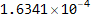
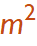
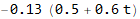
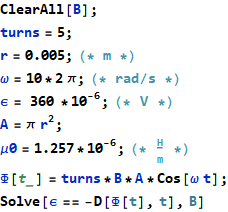

→ permeability constant
n → turns per unit length →
Exam Like Questions: Module 6
Lecture 12
T/F
1) At large distances from the dipole sources the dipole magnetic and dipole electric field patterns are the same.
Answer: True
The both behave as
2) A magnetic dipole can be separated into a north and south magnetic monopole just as we can do with the two charges of the electric dipole.
Answer: False
Look at Maxwell’s Equation ·, the divergence of the magnetic field is zero meaning field lines have no beginning or end.
Multiple Choice
1) A 10 cm long solenoid has 1300 turns and a current of 10 mA flowing through it. The magnetic field inside the solenoid is: a) 1.63 x T, b) 0.0163 T, c) 0.52 T, or d) 5.2 mT.
Answer: A
For solenoid:
→ permeability constant
n → turns per unit length → 


2) A rectangular wire loop is lying on the page with one of its edges parallel to the right side of the page. A clockwise current of 1 A is flowing in the wire loop. A magnetic field lies in the page pointing from left towards right side of the page, the torque on the current loop is a) points to the top of the page, b) to the left, c) to the bottom of the page, or d) into the page.
Answer: C
× → (-
the direction of the vector μ is given by the rotation of the current use RHR. CW→into page, CCW→out of page
Use the RHR again
Useful Exercises
1) A proton moving with velocity = 3.6 x  m/s experiences a magnetic force of 7.4 x
m/s experiences a magnetic force of 7.4 x  N. A second proton moving on the x-axis experiences a magnetic force of 2.8 x N. Find the magnitude and direction of the magnetic field (assumed to be uniform), and the velocity of the second proton.
N. A second proton moving on the x-axis experiences a magnetic force of 2.8 x N. Find the magnitude and direction of the magnetic field (assumed to be uniform), and the velocity of the second proton.
Answer: a) 0.128 T in the direction (can use matrix method to find) b) m/s
2) A single turn wire loop is 2.0 cm in diameter and carries a 650 mA current. Find the magnetic field strength a) at the loop center and b) on the loop axis 20 cm from the center of the loop.
Answer: a) b) T

but I ⟂  and so
and so
but we want the x component so and 
∫ dl = 2π a
Lecture 13 and 14
T/F
1) Induced electric fields only exist in metal conductors.
Answer: False
Faraday’s Law: ∮ over any closed loop, not just conductors.
You can get an induced E field from time changing magnetic fields
2) Electric power generation in power plants is usually based on Faraday’s Law.
Answer: True
A time varying magnetic flux induces and emf in a closed circuit. Faraday’s Law
Multiple Choice
1) A one-loop wire is lying on the page and a magnetic field points into the page. The magnetic field strength is increasing with time, the induced current direction in the loop is a) clockwise, b) counter clockwise, or c) no current is flowing.
Answer: B
Flux opposes change so it is the negative RHR
2) A magnetic field B(t) =( 0.5 t + 0.3 ) T is perpendicular to a 0.13  wire loop with resistance of 1 Ohm. The current magnitude flowing in the loop at 5 seconds is a) 0.423 A, b) 0.39 A, c) 0.455 A, or d) 3.5 A.
Answer: C
Ohm’s Law: ε=I R or
where
so I

Useful Exercises
1) The current in a 20 cm diameter 2-cm long solenoid is increasing at 2.4 A/s a) how many turns would this solenoid require to have an emf in the coil of 15 V? b) If you double the number of turns what happens to the emf?
Answer: 1779 turns,
for a solenoid
→ N B A using single loop argument of Φ=B A

2) A 5-turn coil 1.0 cm in diameter is rotated at 10 rev/s about an axis perpendicular to a uniform magnetic field. A voltmeter connected to the coil through rotating contacts reads a peak-to-peak voltage difference of 360 μV. What is the magnetic field strength?
Answer: 0.0145903 T
→ N B A using single loop argument of Φ=B A
θ=ω t (kinematics)
